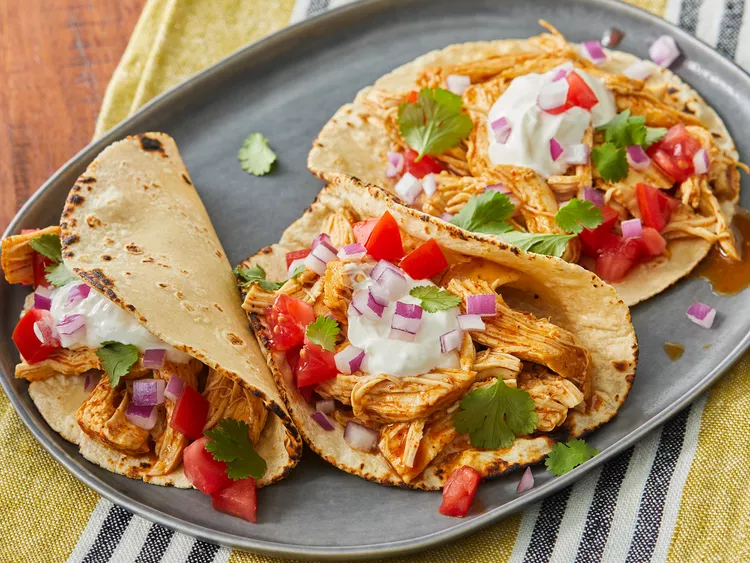

Description
These easy slow cooker chicken tacos are easy to make with just 3 ingredients in your crockpot. Spoon the filling into warm tortillas for a very tasty meal any day of the week. Here’s a brief overview of what you can expect when you make slow cooker chicken tacos: Season the chicken, place it in a slow cooker, and pour the broth over the chicken. Cook on Low for 6 to 8 hours, then shred the chicken before serving.
How To Make The Chicken Tacos In The Slow Cooker
Slow Cooker Chicken Tacos Ingredients
These are the three simple ingredients you’ll need to make these slow cooker chicken tacos:
- Broth: Start with a cup of chicken broth.
- Taco seasoning: Use store-bought taco seasoning or make your own at home.
- Chicken: A pound of skinless, boneless chicken breasts should make eight servings.
Ingredients
- 1 cup chicken broth
- 3 tablespoons taco seasoning mix
- 1 pound skinless, boneless chicken breasts
Directions
Step 1
- Gather All The Ingredients
Step 2
- Combine chicken broth and taco seasoning mix in a bowl.
Step 3
- Place chicken in a slow cooker. Pour chicken broth mixture over chicken.
Step 4
- Cook on Low for 6 to 8 hours. Shred chicken.
